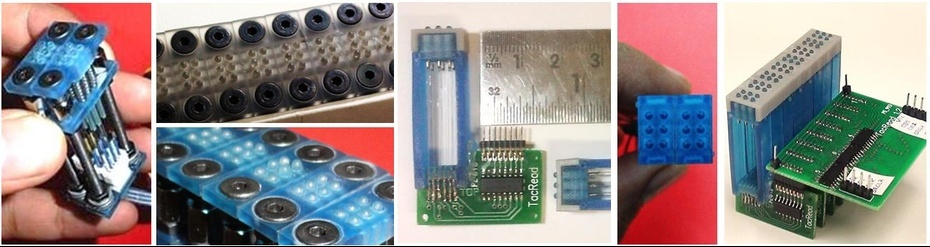

Persons with visual impairment access computers using refreshable Braille displays and speech synthesis softwares. Braille has distinguished advantages over synthetic speech, especially because of its important role in uplifting education, employment and income. However, commercially available Braille displays are typically priced in the range of 2500-4000 USD (65-100 USD per Braille character) and are thus inaccessible to users in both developed and developing countries. Development of affordable Braille displays is thus a critical need. TacRead is a new low-cost technology for refreshable display of braille. Free from the demerits of both auditory devices and paper-embossed braille and at a price point below one-tenth of that of commercially available displays, TacRead has been developed to be equally applicable and available to users in both developed and developing countries. The modules have been developed, prototyped and undergone limited testing. Efforts for fabrication of prototypes for large-scale user trials are in progress.
Pranay Jain, Anshul Singhal, Dhruv Jain, Piyush Chanana, Prof. M. Balakrishnan, Prof. P.V.M. Rao
Project Tacread was started by Pranay Jain and Anshul Singhal in 2011 as a mechanical engineering project when they successfully figured out the mechanical design for a low-cost braille cell (using SMA technology instead of peizo-electric) in one of their course projects. I joined the project in 2012 as a hardware developer to help in their final year project and was primarily responsible for developing the I/O interface between the PC and the display. Specifically, I designed and implemented the low-power, optimally sized PCBs to efficiently handle the lever that raises/suppresses the braille dots. The entire work took about 2 months and consequently resulted in a low-power, small-sized portable braille display which could be easily carried by users in their pockets.
Figure 1: Developmental stages of Tacread. Left to Right: First image shows the initial SMA braille cell. The next images are the cells put together in an array. The third and fourth images shows the small sizes of the developed PCB and the new braille cell. Last image is the resultant novel portable braille display without the enclosure.
Mahindra Satyam Young Engineers Awards for Innovative Applications in Mechatronics, 2012 [National Award]
Young Indians (Yi) - Next Practices Award held in conjuction with India Innovation Initiative, 2012 - Second Position [National Award]
Technology Development and Initiation Award (TDP-IAS) by Industrial R&D unit at IIT Delhi, 2012. Research Grant of Rs 150,000/-